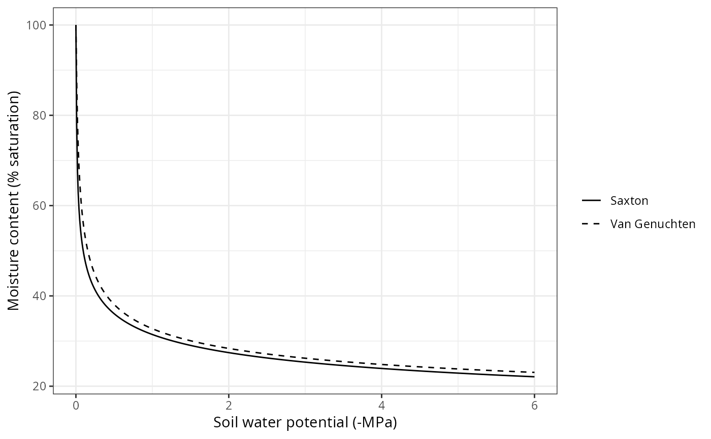

Low-level functions relating soil texture with soil hydraulics and soil water content.
soil_saturatedConductivitySX(clay, sand, bd, om = NA_real_, mmol = TRUE)
soil_unsaturatedConductivitySX(
theta,
clay,
sand,
bd,
om = NA_real_,
mmol = TRUE
)
soil_thetaSATSX(clay, sand, om = NA_real_)
soil_theta2psiSX(clay, sand, theta, om = NA_real_)
soil_psi2thetaSX(clay, sand, psi, om = NA_real_)
soil_psi2kVG(ksat, n, alpha, theta_res, theta_sat, psi)
soil_psi2cVG(n, alpha, theta_res, theta_sat, psi)
soil_psi2thetaVG(n, alpha, theta_res, theta_sat, psi)
soil_theta2psiVG(n, alpha, theta_res, theta_sat, theta)
soil_USDAType(clay, sand)
soil_thetaFC(soil, model = "SX")
soil_thetaWP(soil, model = "SX")
soil_thetaSAT(soil, model = "SX")
soil_waterFC(soil, model = "SX")
soil_waterSAT(soil, model = "SX")
soil_waterWP(soil, model = "SX")
soil_waterPsi(soil, psi, model = "SX")
soil_waterExtractable(soil, model = "SX", minPsi = -5)
soil_theta(soil, model = "SX")
soil_water(soil, model = "SX")
soil_rockWeight2Volume(pWeight, bulkDensity, rockDensity = 2.3)
soil_psi(soil, model = "SX")
soil_conductivity(soil, model = "SX")
soil_capacitance(soil, model = "SX")
soil_saturatedWaterDepth(soil, model = "SX")
soil_vanGenuchtenParamsCarsel(soilType)
soil_campbellParamsClappHornberger(soilType)
soil_vanGenuchtenParamsToth(clay, sand, om, bd, topsoil)
soil_retentionCurvePlot(
soil,
model = "SX",
layer = 1,
psi = seq(0, -6, by = -0.01),
relative = TRUE,
to = "SAT"
)Percentage of clay (in percent weight).
Percentage of sand (in percent weight).
Bulk density (in g/cm3).
Percentage of organic matter (optional, in percent weight).
Boolean flag to indicate that saturated conductivity units should be returned in mmol/m/s/MPa. If mmol = FALSE then units are cm/day.
Relative water content (in percent volume).
Water potential (in MPa).
saturated hydraulic conductance
Parameters of the Van Genuchten-Mualem model (m = 1 - 1/n).
Initialized soil object (returned by function soil).
Either 'SX' or 'VG' for Saxton's or Van Genuchten's water retention models; or 'both' to plot both retention models.
Minimum water potential (in MPa) to calculate the amount of extractable water.
Percentage of corresponding to rocks, in weight.
Bulk density of the soil fraction (g/cm3).
Rock density (g/cm3).
A string indicating the soil type.
A boolean flag to indicate topsoil layer.
Soil layer to be plotted.
Boolean flag to indicate that retention curve should be relative to field capacity or saturation.
Either 'SAT' (saturation) or 'FC' (field capacity).
Depends on the function (see details).
soil_psi2thetaSX() and soil_theta2psiSX() calculate water potentials (MPa) and water contents (theta) using texture data the formulae of Saxton et al. (1986) or Saxton & Rawls (2006) depending on whether organic matter is available.
soil_psi2thetaVG() and soil_theta2psiVG() to the same calculations as before, but using the Van Genuchten - Mualem equations (Wösten & van Genuchten 1988).
soil_saturatedConductivitySX() returns the saturated conductivity of the soil (in cm/day or mmol/m/s/MPa), estimated from formulae of Saxton et al. (1986) or Saxton & Rawls (2006) depending on whether organic matter is available.
soil_unsaturatedConductivitySX() returns the unsaturated conductivity of the soil (in cm/day or mmol/m/s/MPa), estimated from formulae of Saxton et al. (1986) or Saxton & Rawls (2006) depending on whether organic matter is available.
soil_USDAType() returns the USDA type (a string) for a given texture.
soil_vanGenuchtenParamsCarsel() gives parameters for van Genuchten-Mualem equations (alpha, n, theta_res and theta_sat, where alpha is in MPa-1) for a given texture type (Leij et al. 1996)
soil_vanGenuchtenParamsToth() gives parameters for van Genuchten-Mualem equations (alpha, n, theta_res and theta_sat, where alpha is in MPa-1) for a given texture, organic matter and bulk density (Toth et al. 2015).
soil_psi() returns the water potential (MPa) of each soil layer, according to its water retention model.
soil_theta() returns the moisture content (as percent of soil volume) of each soil layer, according to its water retention model.
soil_water() returns the water volume (mm) of each soil layer, according to its water retention model.
soil_conductivity() returns the conductivity of each soil layer (mmol/m/s/MPa), according the Saxton model.
soil_waterExtractable() returns the water volume (mm) extractable from the soil according to its water retention curves and up to a given soil water potential.
soil_waterFC() and soil_thetaFC() calculate the water volume (in mm) and moisture content (as percent of soil volume) of each soil layer at field capacity, respectively.
soil_waterWP() and soil_thetaWP() calculate the water volume (in mm) and moisture content (as percent of soil volume) of each soil layer at wilting point (-1.5 MPa), respectively.
soil_waterSAT(), soil_thetaSATSX() and soil_thetaSAT() calculate the saturated water volume (in mm) and moisture content (as percent of soil volume) of each soil layer.
soil_saturatedWaterDepth() returns the depth to saturation in mm from surface.
soil_rockWeight2Volume() transforms rock percentage from weight to volume basis.
soil_retentionCurvePlot() allows ploting the water retention curve of a given soil layer.
Leij, F.J., Alves, W.J., Genuchten, M.T. Van, Williams, J.R., 1996. The UNSODA Unsaturated Soil Hydraulic Database User’s Manual Version 1.0.
Saxton, K.E., Rawls, W.J., Romberger, J.S., Papendick, R.I., 1986. Estimating generalized soil-water characteristics from texture. Soil Sci. Soc. Am. J. 50, 1031–1036.
Saxton, K.E., Rawls, W.J., 2006. Soil water characteristic estimates by texture and organic matter for hydrologic solutions. Soil Sci. Soc. Am. J. 70, 1569. doi:10.2136/sssaj2005.0117
Wösten, J.H.M., & van Genuchten, M.T. 1988. Using texture and other soil properties to predict the unsaturated soil hydraulic functions. Soil Science Society of America Journal 52: 1762–1770.
Tóth, B., Weynants, M., Nemes, A., Makó, A., Bilas, G., and Tóth, G. 2015. New generation of hydraulic pedotransfer functions for Europe. European Journal of Soil Science 66: 226–238.
#Determine USDA soil texture type
type = soil_USDAType(clay=40, sand=10)
type
#> [1] "Silty clay"
#Van Genuchten's params (bulk density = 1.3 g/cm)
vg = soil_vanGenuchtenParamsToth(40,10,1,1.3,TRUE)
vg
#> alpha n theta_res theta_sat
#> 92.643194 1.249553 0.041000 0.484241
# Define soil with default params
soil_df <- defaultSoilParams(4)
soil_df
#> widths clay sand om nitrogen bd rfc
#> 1 300 25 25 NA NA 1.5 25
#> 2 700 25 25 NA NA 1.5 45
#> 3 1000 25 25 NA NA 1.5 75
#> 4 2000 25 25 NA NA 1.5 95
# Initialize soil parameters and state variables
s = soil(soil_df)
# Plot Saxton's and Van Genuchten's water retention curves
soil_retentionCurvePlot(s, model="both")
